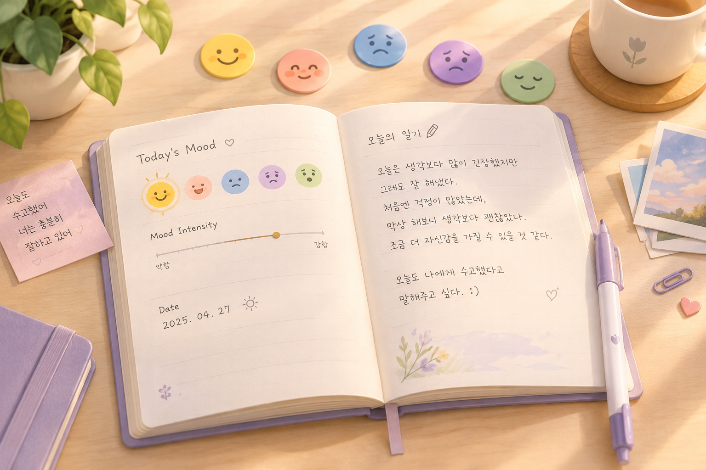
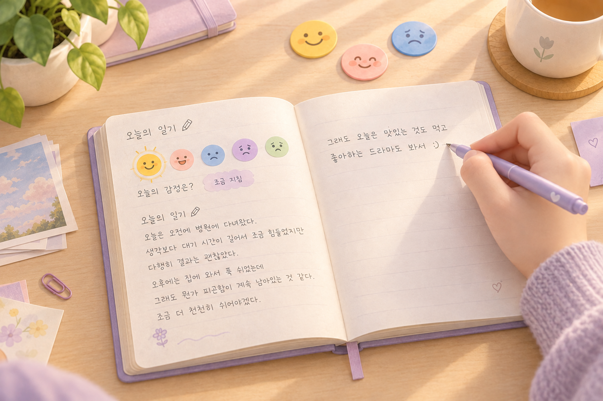
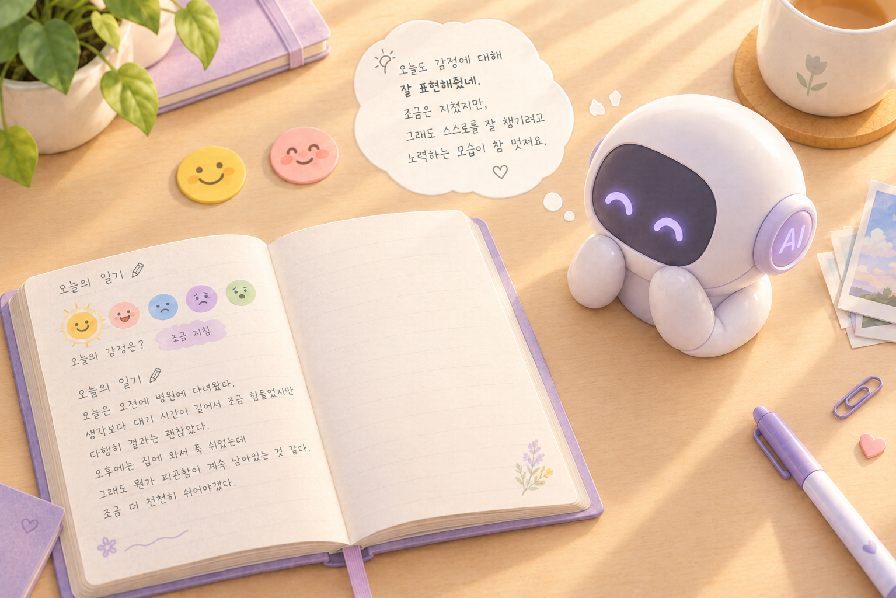
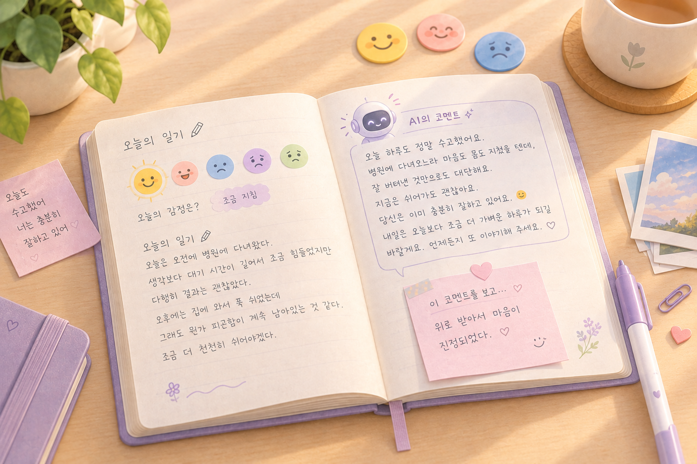

서비스 소개
오늘의 마음을 기록하고,
따뜻한 위로를 받아보세요.

하루 동안 있었던 일과 그로 인해 느껴졌던 감정, 생각을 자유롭게 기록해 보세요.
AI가 당신의 이야기에 귀 기울이고, 따뜻한 공감과 위로를 전해드립니다.
AI의 위로로 마음이 정리되었다면, 정리된 감정을 메모로 남겨보세요.
감정 일기 기능 안내

감정 일기 작성
"오늘의 마음을 있는 그대로 작성해 보세요."
하루 동안 느낀 기쁨과 슬픔, 솔직한 감정들까지. 친한 친구에게도 하지 못한
속마음을 일기장에 편하게 작성해보세요.
작성자 외에는 아무도 볼 수 없어 완벽한 비밀이 보장됩니다.

AI 위로 받기
"나만을 위한 AI의 따뜻한 공감과 위로"
작성하신 일기를 바탕으로 AI 봇이 진심 어린 위로의 답장을 건네어 드립니다.
혼자 간직하기엔 무거웠던 감정들, 이제는 AI의 다정한 피드백과 함께 마음을 한결 가볍게 비워내 보세요.

정리된 감정 메모하기
"정리된 감정을 메모로 남갸보세요."
AI의 위로를 통해 마음이 한결 가벼워졌나요?
정리된 감정과 새로워진 마음을 메모로 기록하며 오늘 하루를 기분 좋게 마무리해 보세요.
이용 방법
- 회원 가입 및 로그인
- 감정 일기 작성
- AI 위로 받기
- 정리된 감정 메모하기
회원가입
수신 가능한 이메일을 사용해주세요.
수신 불가 이메일 사용 시 비밀번호를 찾을 수 없습니다.